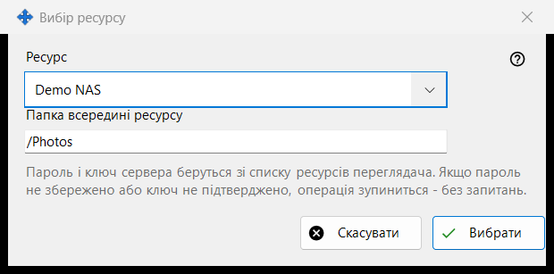
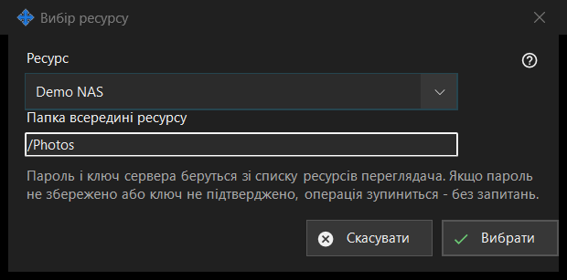

Вибір ресурсу
Призначення
Вибирає ресурс зі списку ресурсів переглядача як джерело або призначення операції за розкладом. Вікно відкривається кнопкою «Ресурс..» поруч із Джерелом або Призначенням у вікні запланованої операції.


Порядок дій
- Виберіть ресурс у списку «Ресурс».
- Перевірте або змініть «Папка всередині ресурсу»; спершу це коренева папка ресурсу.
- Натисніть «Вибрати». «Скасувати» залишає попереднє місце.
Елементи вікна
Список ресурсів
Пропонуються лише SFTP-сервери та мережеві папки зі списку переглядача, за абеткою; ресурси інших видів не показуються. Якщо відповідних немає, вікно повідомляє: «У списку ресурсів немає відповідних ресурсів. Додайте SFTP-сервер або мережеву папку в переглядачі.», а кнопка «Вибрати» лишається недоступною. Додавати ресурс і наново підтверджувати його ключ потрібно в переглядачі; це вікно з'єднань не встановлює.
Папка всередині ресурсу
Папка має лежати всередині кореня вибраного ресурсу, інакше «Зберегти» у вікні операції її відхилить. Під час вибору іншого ресурсу поле заповнюється коренем цього ресурсу.
Запуск без запитань
Пароль і ключ сервера беруться зі списку ресурсів переглядача. Запуск нічого не питає: якщо пароль не збережено або ключ сервера не підтверджено, операція зупиняється, а журнал пояснює причину. Ресурс лише для читання не можна використовувати для переміщення й видалення, ресурс із коренем під PIN-кодом відхиляється, а архів приймає лише звичайні папки.
Налаштування менеджера · Налаштування спільного доступу SFTP · Налаштування сервера обміну